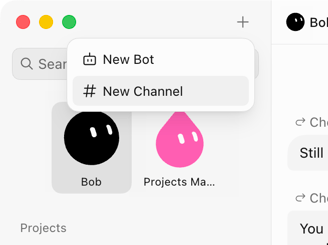
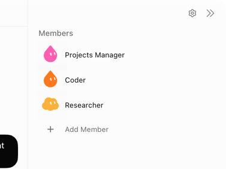
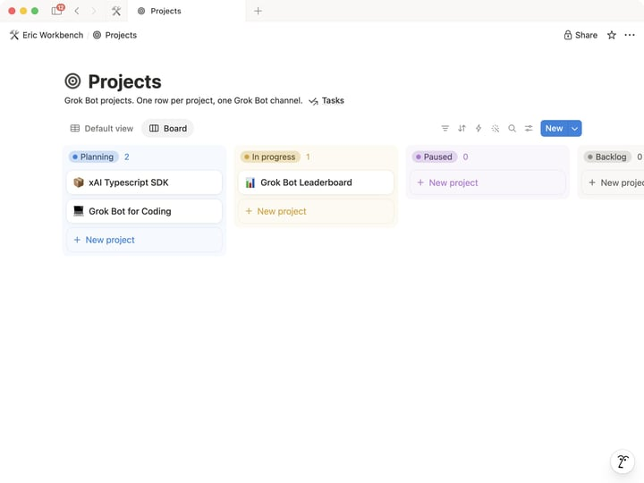
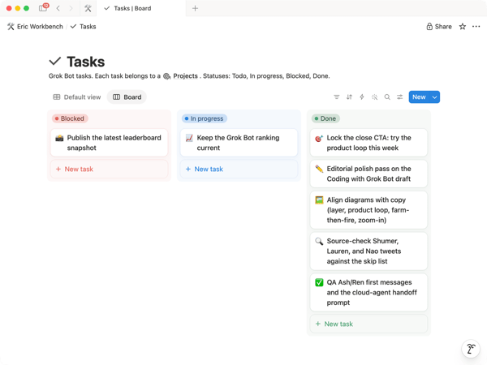

Official guides · 20/27
How I run multiple teams of Grok Bots
Each project gets a channel, a roster, and a Notion (a notes and database app) board. An experimental pattern for coordinating bots like a human team.
Most of the time I run my Grok Bots as separate chats. Coder in one, Writer in another, Researcher in a third. That's all fine until you need to juggle a couple of different projects at the same time. It becomes hard to filter out signal from noise, and keep them in sync.
As a human and a team of humans, we tend to coordinate work in projects. Each project gets a spec, a plan, perhaps a Slack (a work chat app) channel to communicate in. Then for each project, you'd have different tasks that someone takes on.
So I replicated that. Each project gets a Grok Bot (xAI's AI assistant that comes with its own computer) channel and an entry in a Notion database. Note that this is an experimental pattern I'm still trying out.
One project, one channel, one roster.
The setup
I created two databases in Notion, Projects and Tasks. Then I created a projects (plural) Manager bot. This takes care of the higher-level coordination of projects and tasks. It has a Project Ops skill that takes care of creating a project, opening a channel, and staffing it with the right bots. It's responsible for the meta work.
One project equals one channel in the sidebar, and the channel has the team of bots (and me) in it.

A project channel in the sidebar
The channel rosterStaffing rules I added:
- Reuse existing bots first. This can be a Coder, Researcher, Writer, or anything else that I've already defined.
- Propose at most five bots besides the PM. Each channel is limited at six bots (just an arbitrary number I came up with).
- Create a new bot only when nothing on the bench fits, and only after I say yes. This could be a specialist in a domain that gets reused in the future, or an ephemeral one only for this project.
Here's what the Projects database looks like:

Projects database in NotionHow I use it
Once the channel exists, I talk in it with the roster and we scope out the tasks for the project.
The PM sits in the channel too, but mostly watches progress and makes sure the databases are up to date.
When a bot gets stuck, or needs more input, it'll mark its task as Blocked and then ping me in the channel. Often the bots can accomplish a lot on their own, and I can just watch the cards getting moved around. Quite satisfying, to be honest.

Tasks moving across the boardThe interesting part is that the more I build on this, the more it resembles a system initially built for humans. A board, a manager, specialists claiming tasks, a blocked column, a channel.
That is the experiment so far. If you run a team of bots, I want to see your setup. How do you run yours?
Written by Eric Zakariasson
Source: https://x.ai/bot/guides/how-i-run-multiple-teams-of-grok-bots